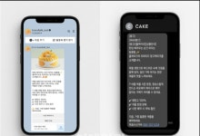
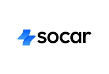

카카오 "브랜드 메시지, SMS보다 신뢰·마케팅 효과 커"
카카오(035720)가 지난 5월 새로 선보인 기업용 광고 상품 ‘브랜드 메시지’가 기존 문자메시지(SMS) 광고보다 소비자 신뢰와 수용도가 높고, 마케팅 효과 역시 우수하다는 연구결과를 공개했다. 설문에 활용된 플
이데일리
'카카오톡', 인스타처럼 게시물 먼저 뜬다…"본질 훼손" 내부서도 균열
카카오가 다음 달부터 국민 메신저 ‘카카오톡’의 초기 화면을 대대적으로 손질하면서 '친구' 탭을 인스타그램처럼 바꾸는 것으로 알려졌다. 2010년 서비스를 시작한 뒤 15년간 ‘전화번호부 형식에 맞춰 가나다순으로 이
파이낸셜뉴스

쏘카, 리브랜딩 단행…"모든 이동 포괄하는 브랜드로 확장"
모빌리티 플랫폼 쏘카(403550)가 브랜드 아이덴티티(BI)를 새롭게 단장했다고 20일 밝혔다. 종합 모빌리티 기업으로서의 정체성을 강화하기 위한 취지다. 새로운 브랜드 슬로건은 ‘라이프타임 모빌리티 쏘카’다. 이
서울경제
NC AI “패션·3D 협업도 활발… 행정서비스에도 AI 도입 구상”
엔씨소프트의 인공지능(AI) 자회사인 NC AI는 정부의 ‘독자 AI 파운데이션 프로젝트’ 5개 정예팀에 선정된 유일한 게임업체 계열사다. 산업과 밀접한 AI를 개발해 적용하고 있는 만큼 산업 특화 파운데이션 모델
국민일보
펄어비스 붉은사막, '게임스컴 어워드 2025' 4개 부문 후보 올라
펄어비스는 오픈월드 액션 어드벤처 신작 ‘붉은사막’이 ‘2025 게임스컴 어워드’에서 4개 부문에 후보작으로 올랐다고 19일 밝혔다. 게임스컴 어워드는 글로벌 최대 게임쇼 게임스컴에서 공개된 게임 중 최고의 타이틀을
파이낸셜뉴스